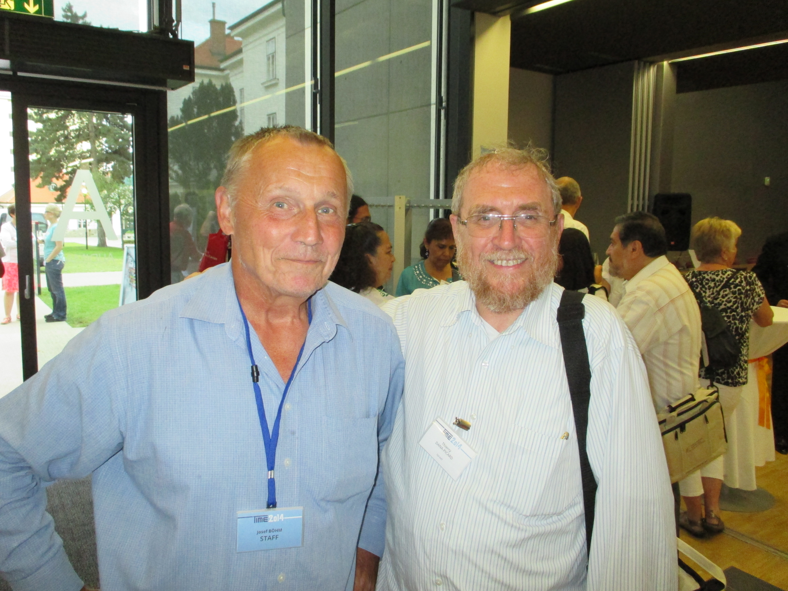
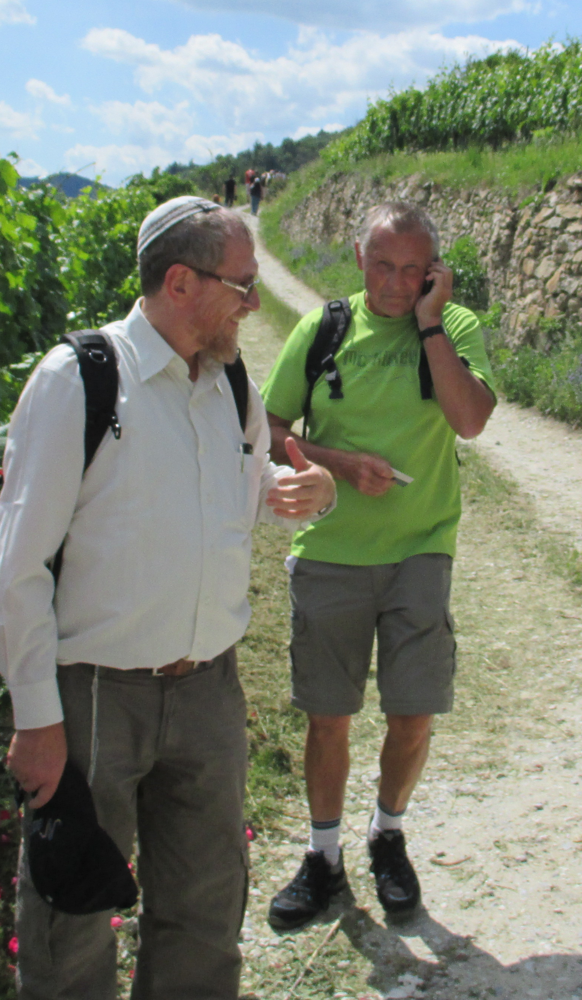
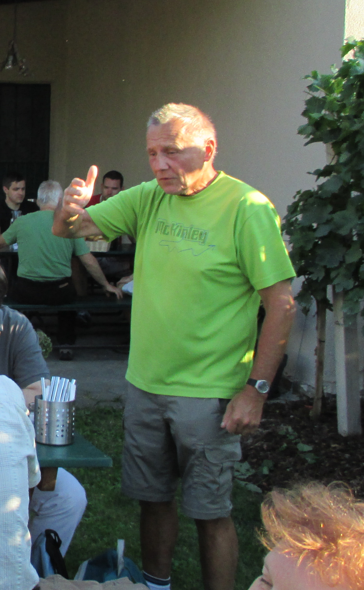
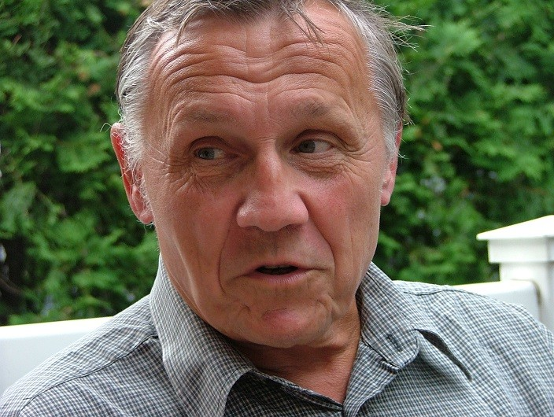
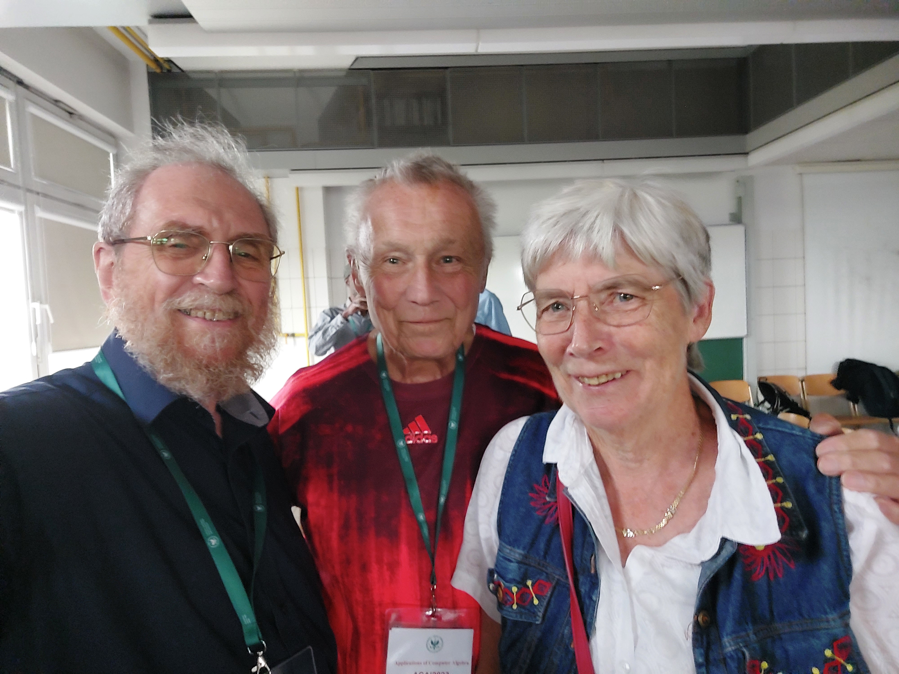

    
Founder, with Bernhard Kutzler and Helmut Heugl, of the Austrian Center for Didactics of Computer Algebra (ACDCA) in the early 1990s and editor of the Derive Newsletter -- the bulletin of the Derive User Group (DUG) -- whose first issue appeared in January 1991 and the last in March 2024 at the rate of 4 issues per year. Josef Böhm has been a proud user of technology in the teaching of mathematics, namely Derive, Geogebra and TI-Nspire. We will keep excellent memories of him from his participation and lectures in the numerous ACDCA, TIME, USACAS and ACA conferences. Josef was a family man, a valued friend.
--- Michel Beaudin
See Derive User Group + CAS-TI.
Go to:
Conferences on Applications of Computer
Algebra main page